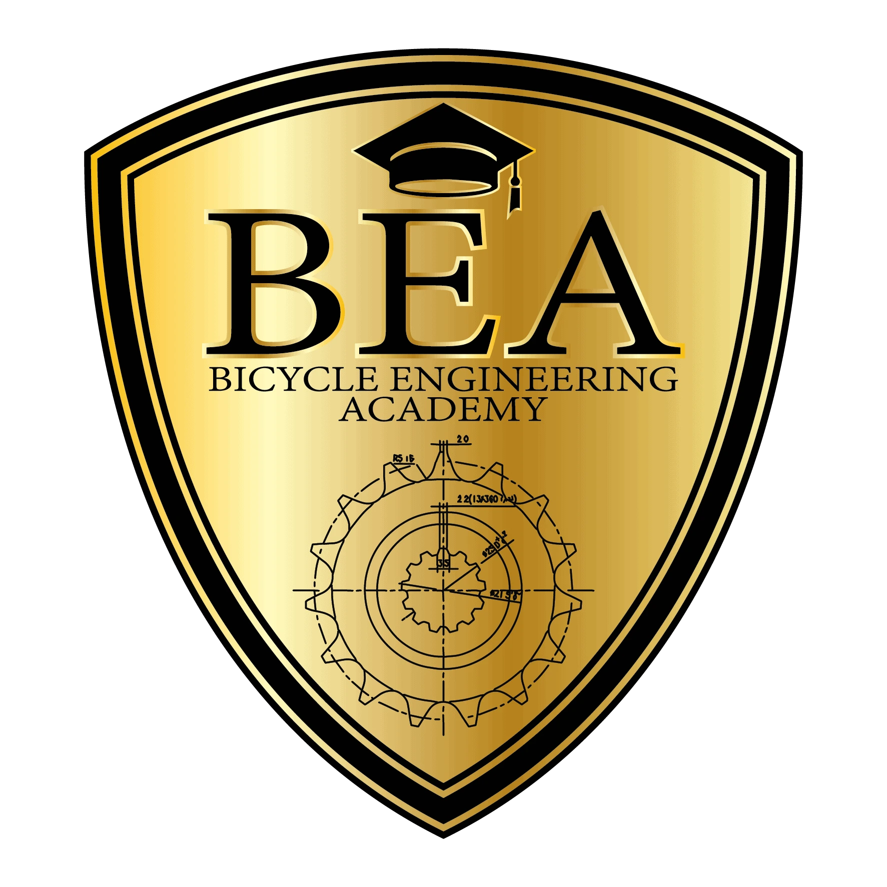
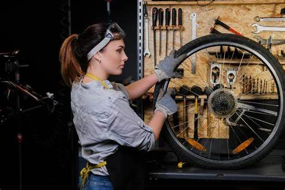
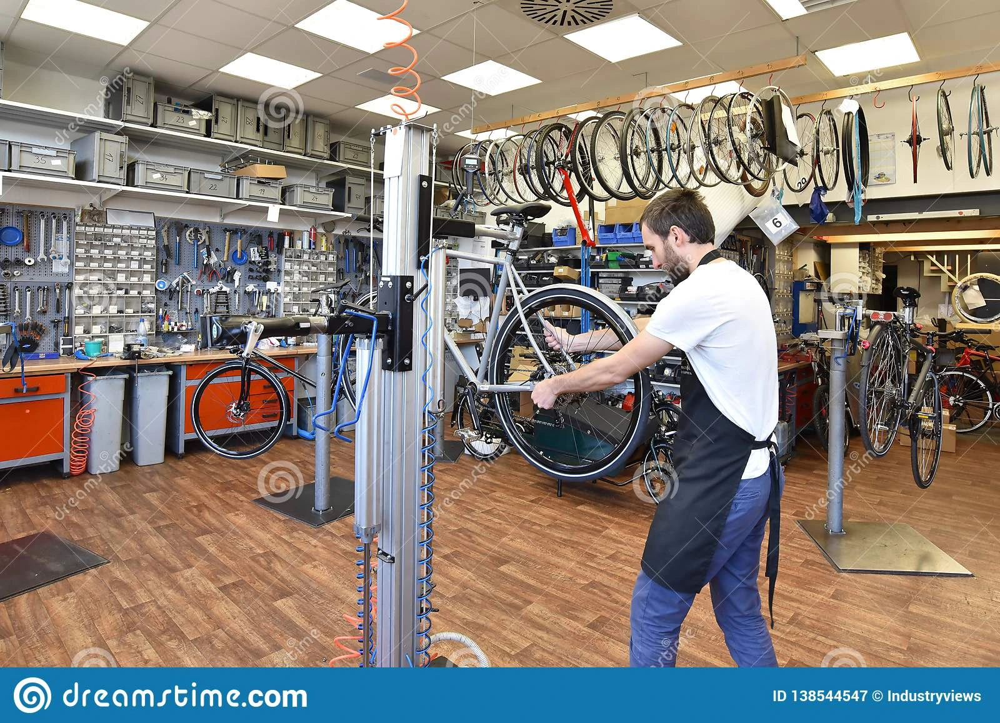

John Michaels
Head Mechanic/ Owner
A national champ and 24hr solo machine. John is the founder of Cycle Repairs. He grew up in the UK but now lives in Cork.
Qualifications
- BEAcademy Technical 1 + 2
- BEAcademy Wheelbuilding
- Fox Tech Training Advanced
- BEA Diplom in Bike Tech
Achievements
- Best Frame Patent
- Best Electric Cycle Solution for offroad cycling
- Best Team at repairs competition
- British Cycling National, Main Mechanic
- Best County startup development

Sandra Byrne
Customer Service/ Ordering
